Tutorial
Complete guide to using BluePunch for punch lists, takeoffs, photo markup, and PDF export. Covers every feature on iOS, Android, and iPad.
Contents
- Projects and PDF import
- Plan viewer
- Punch list mode
- Point detail and editing
- Photo capture and markup
- Takeoff mode
- Calibrating the plan scale
- Area tool
- Linear tool
- Count tool
- Cloud / revision tool
- Select tool
- Labels, trades, and colors
- Entries panel
- Takeoff settings
- Punch list export
- App settings
- File name customization
- Tips and shortcuts
1. Projects and PDF import
When you open BluePunch, you see the project list. Each project corresponds to one PDF plan set.
Creating a project
Tap the + button in the bottom right corner. This opens the system file picker where you can select any PDF from your device, iCloud Drive, Google Drive, Dropbox, or any other connected storage provider.
Once you select a PDF, BluePunch creates the project immediately. The project name defaults to the PDF filename, and all pages in the PDF are imported automatically.
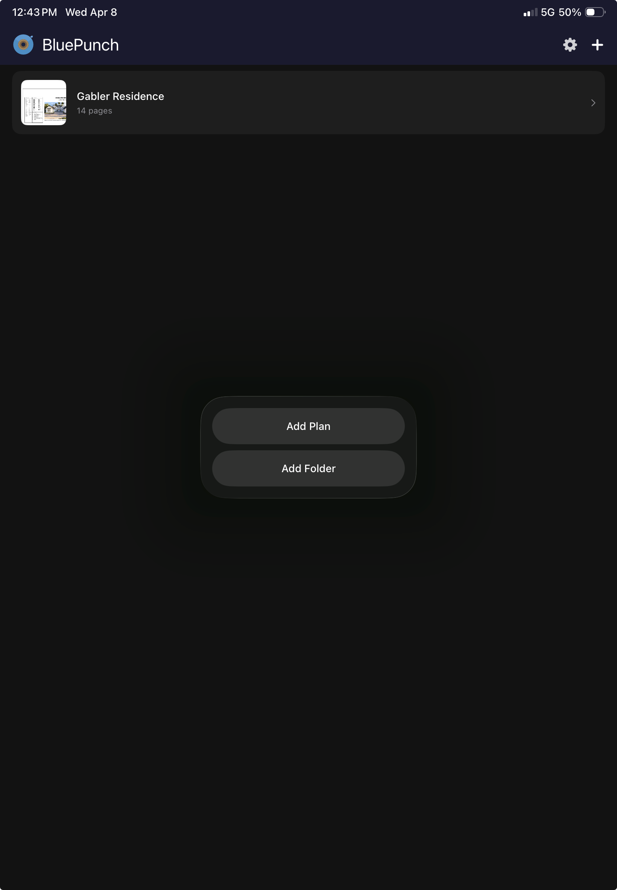
Opening from another app
You can also open a PDF directly from email, a browser, or the Files app. Use the system Share menu or "Open in" option to send the PDF to BluePunch. The project is created automatically.
Renaming a project
Long-press a project in the list to rename it. The name is used on the cover page of exported reports.
Deleting a project
Swipe left on a project to delete it. This permanently removes all punch items, takeoff measurements, photos, and settings associated with that project.
Tip: BluePunch is designed for standard 24×36 builder plan sets (ARCH D). Larger commercial sets (36×48 / ARCH E) and smaller residential sets (18×24 / ARCH C) also work — just make sure to calibrate your scale correctly.
2. Plan viewer
Tapping a project opens the plan viewer. This is where all work happens — punch lists, takeoffs, and exports are all accessed from this screen.
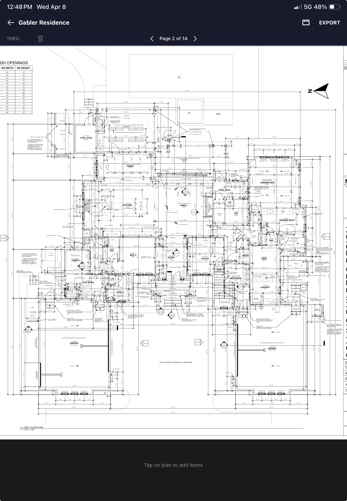
Screen layout
The plan viewer has four areas:
- Top bar — project name, mode toggle button, and EXPORT button.
- Page navigation bar — zoom percentage display, left/right arrows to switch pages, and "Page X of Y" indicator. In takeoff mode, a gear icon opens takeoff settings. In punch list mode, a trash icon lets you clear all items.
- Plan area — your PDF rendered at full resolution. Pinch to zoom, drag to pan.
- Bottom panel — in punch list mode, shows your punch items. In takeoff mode, shows tool controls and status.
Navigating pages
Use the left/right arrows in the page navigation bar to move between pages. Each page maintains its own set of punch items and takeoff measurements independently.
Zooming
Pinch with two fingers to zoom in and out. The current zoom percentage is displayed in the top-left of the page navigation bar. Double-tap to quickly zoom into an area.
3. Punch list mode
Punch list mode is the default when you open a project. Tap anywhere on the plan to place a numbered marker.
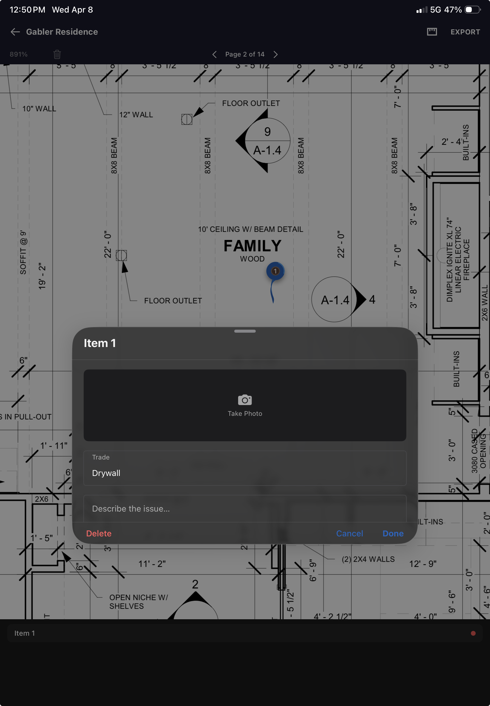
Placing a punch item
- Tap anywhere on the plan. A numbered blue marker appears at that location.
- The point detail sheet opens automatically so you can add notes, a trade, and a photo.
- Tap Done or swipe down to close the detail sheet. The item is saved.
Points list
All punch items for the current page appear in the scrollable list at the bottom of the screen. Each row shows the item number, trade, and notes preview. Tap any row to reopen its detail sheet.
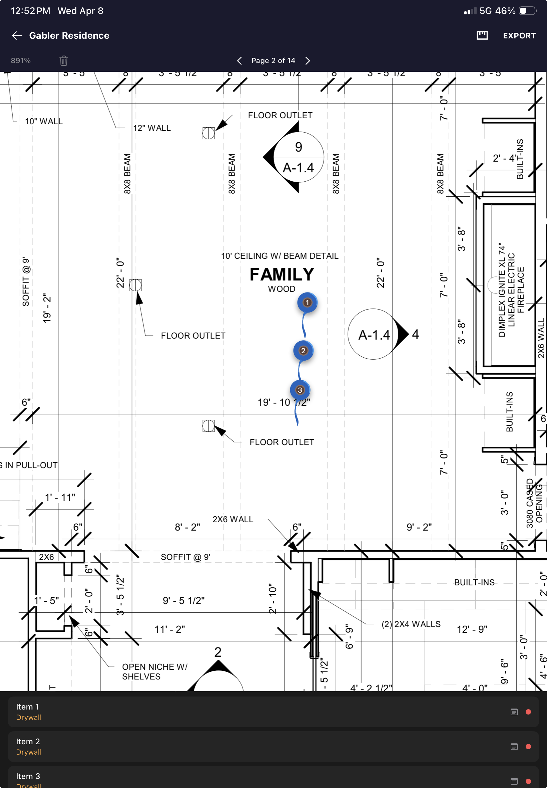
Empty state
When no items have been placed on the current page, the bottom panel shows "Tap on plan to add items" as a hint.
Clearing all items
Tap the trash icon in the page navigation bar to clear all punch list items for the entire project. This requires two confirmations to prevent accidental deletion. Make sure you have exported your punch list before clearing.
4. Point detail and editing
The point detail sheet is where you add all the information for a single punch item.
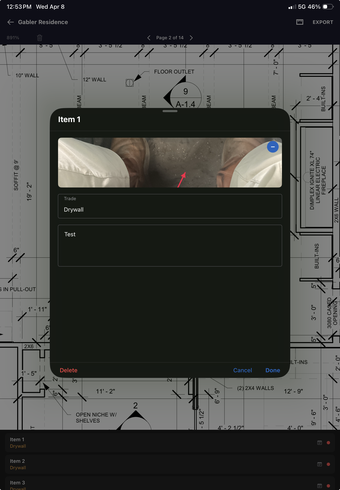
Fields
| Field | Description |
|---|---|
| Item number | Assigned automatically in the order items are placed. Displayed as "Item 1", "Item 2", etc. |
| Photo | Tap the camera area to capture a photo. After capturing, the markup editor opens automatically so you can annotate the photo before saving. Tap an existing photo to reopen the markup editor. |
| Trade | The responsible subcontractor — Plumber, Electrician, Painter, HVAC, etc. Includes autocomplete from previously used trades and trades saved in Settings. |
| Notes | Free-text description of the issue. This appears in the exported PDF report under each item. |
Trade autocomplete
As you type in the trade field, BluePunch shows suggestions from your trade list (up to five matches). Tap a suggestion to fill it in. You can also type a new trade name that hasn't been used before. The last trade you used is remembered and pre-filled on the next item.
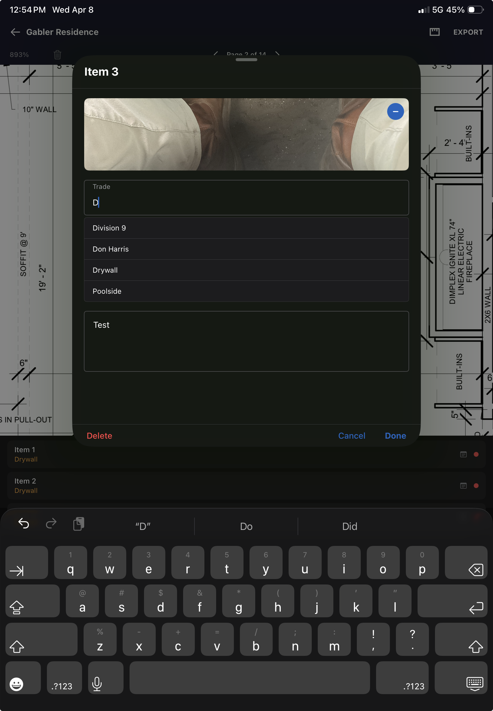
Deleting a punch item
Open the detail sheet and tap Delete at the bottom. The marker is removed from the plan and all remaining items are renumbered automatically.
5. Photo capture and markup
Every punch item can include a photo with annotations. Photos are captured directly from the point detail sheet.
Taking a photo
In the point detail sheet, tap the camera area (or the camera icon if no photo exists). This opens your device camera. After capturing the photo, a timestamp is automatically added to the image, and the markup editor opens immediately so you can annotate the photo before saving it.
Markup editor
Tap an attached photo to open the full-screen markup editor. This is where you annotate photos with arrows, shapes, and text.
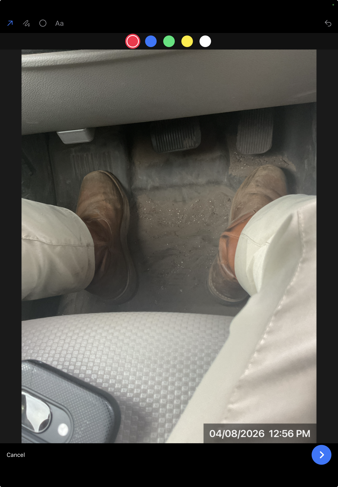
Markup tools
The top toolbar has four drawing tools, and the color bar sits directly below it:
| Tool | How to use |
|---|---|
| Arrow | Drag from start to end to draw an arrow pointing at an issue. |
| Draw (Freehand) | Draw freely with your finger. Use for irregular shapes or quick marks. |
| Circle | Drag to draw a circle highlighting a problem area. |
| Text | Tap anywhere on the photo to place a text label. Type your annotation text in the dialog that appears. |
| Undo | Remove the last annotation you drew. Disabled when there are no annotations. |
Colors
A color bar below the tools lets you pick the annotation color. Five colors are available: Red (default), Blue, Green, Yellow, and White. The selected color has a white ring around it.
When you tap Save, all annotations are permanently burned into the image. The annotated photo is included in your exported PDF report.
Removing a photo
In the point detail sheet, tap the minus button (blue circle) in the top-right corner of the photo to delete it.
Tip: Red arrows on a close-up photo of the issue are the fastest way to communicate a problem to a subcontractor. One arrow is usually enough — keep it clean.
6. Takeoff mode
Takeoff mode lets you measure areas, linear distances, counts, and mark revision clouds directly on your plans.
Switching modes
Tap the mode toggle button in the top-right of the toolbar (the triangular takeoff icon). The toolbar changes to show takeoff tools at the bottom. Tap the clipboard icon (which replaces the takeoff icon) to return to punch list mode.
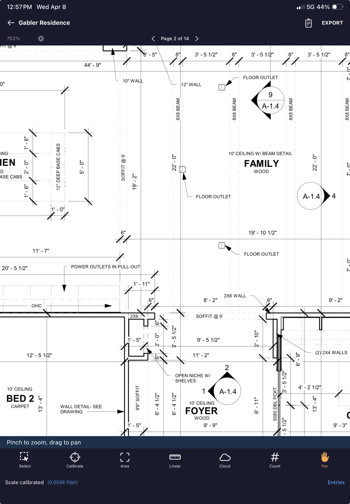
Takeoff toolbar
The bottom toolbar in takeoff mode contains seven tools, displayed left to right in this order:
| Tool | Icon | Purpose |
|---|---|---|
| Select | Dashed square with cursor | Tap to select measurements for editing or deletion |
| Calibrate | Crosshair scope | Set the plan scale by measuring a known distance |
| Area | Viewfinder | Measure area in square feet by placing polygon vertices |
| Linear | Ruler | Measure length in feet by placing points along a path |
| Cloud | Cloud | Drag to draw a revision cloud with annotation text |
| Count | Number | Count items by tapping directly on the plan |
| Pan | Hand | Scroll and zoom without accidentally placing points |
Action bar
Above the toolbar, a status bar shows context-sensitive information: calibration status ("Pan to align Point 1"), current measurement in progress, number of points placed, etc. Action buttons on the right side change depending on the active tool:
- + button (orange) — places a point at the crosshair position (Calibrate, Area, Linear)
- ✓ button (green) — confirms calibration or completes an area/linear measurement
- Undo button (orange) — removes the last placed point (Area, Linear)
- Label button (tag icon) — set or change the label and trade (Area, Linear, Cloud, Count)
- Shape toggle (square/pentagon) — switch between rectangle and polygon mode (Area only)
Crosshair
When using the Calibrate, Area, or Linear tools, a crosshair appears on the plan to help you place points precisely. Drag the plan to position the crosshair exactly where you want, then tap the + button in the action bar to confirm the point. This gives you much finer control than tapping directly, especially on dense plans. The crosshair automatically centers on the visible viewport when you switch to one of these tools.
7. Calibrating the plan scale
Before running any takeoffs, you need to calibrate the plan scale so BluePunch knows the real-world size of the drawing.
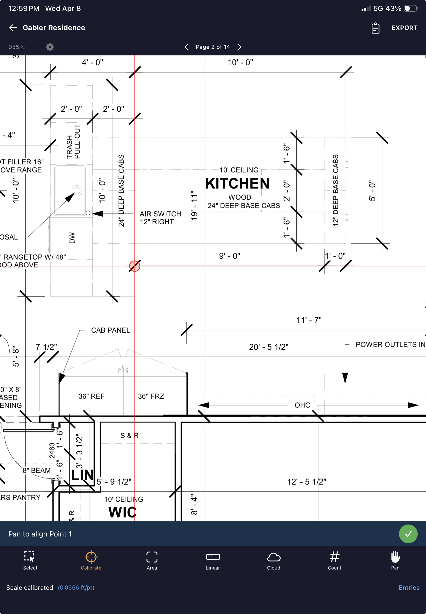
Steps
- Select the Calibrate tool from the toolbar. The status bar says "Pan to align Point 1".
- Drag the plan so the crosshair sits on one end of a known dimension (e.g., a wall dimension line). Tap the ✓ button.
- The status changes to "Pan to align Point 2". Move the crosshair to the other end of that same dimension. Tap ✓ again.
- A calibration dialog appears asking for the real-world distance. Enter the measurement in feet and inches (e.g., 24 ft 0 in).
- Tap Set Scale. The plan scale is calculated and saved to the project.
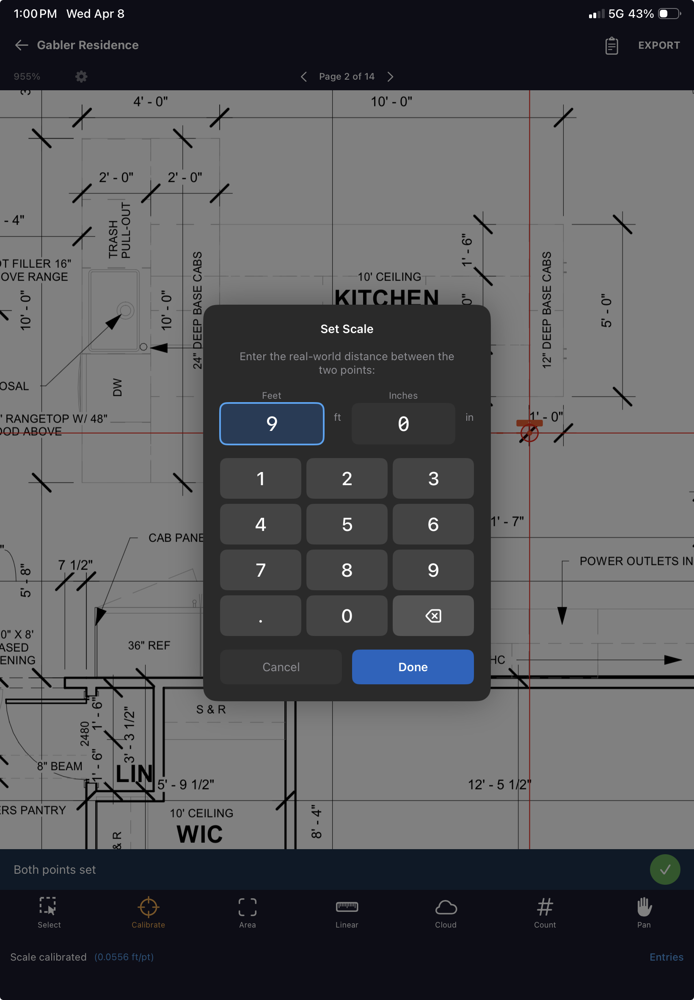
Recalibrating
You can recalibrate at any time by selecting the Calibrate tool and repeating the process. The new scale replaces the old one. All existing area and linear measurements across all pages are automatically recalculated using the new scale.
Scale persistence
The calibrated scale is saved to the project and applies to all pages. If your plan set has pages at different scales, recalibrate when you switch to a page with a different scale.
Tip: Use the longest known dimension on the plan for calibration. Longer dimensions give more accurate scale calculations. Look for overall building dimensions or clearly marked reference lines.
8. Area tool
The area tool measures enclosed areas in square feet. You define a polygon by placing vertices, and BluePunch calculates the enclosed area using the calibrated scale.
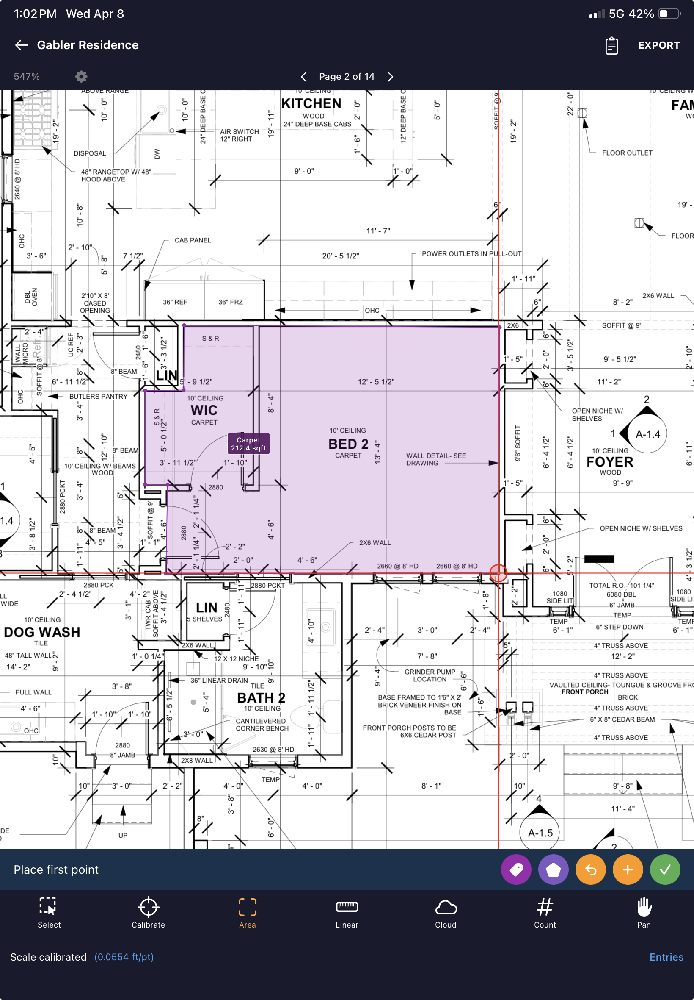
Placing vertices
- Select the Area tool.
- Position the crosshair at the first corner of the area you want to measure. Tap the + button.
- Move to each subsequent corner and tap + to place each vertex.
- When you've placed all vertices (minimum 3), tap the ✓ button to close the polygon. The area in square feet is calculated and displayed as a label inside the shape.
Rectangle mode
Tap the shape toggle button (square icon in the action bar) to switch between polygon mode and rectangle mode. In rectangle mode, you only need to place two points — opposite corners — and BluePunch automatically creates a rectangle.
Undo
Tap Undo in the action bar to remove the last placed vertex before completing the shape.
Tip: For L-shaped rooms, you can either trace the full L as a polygon, or measure two separate rectangles and add the areas manually.
9. Linear tool
The linear tool measures distances along a path in feet and inches. Place points at each segment endpoint and BluePunch calculates the total length.
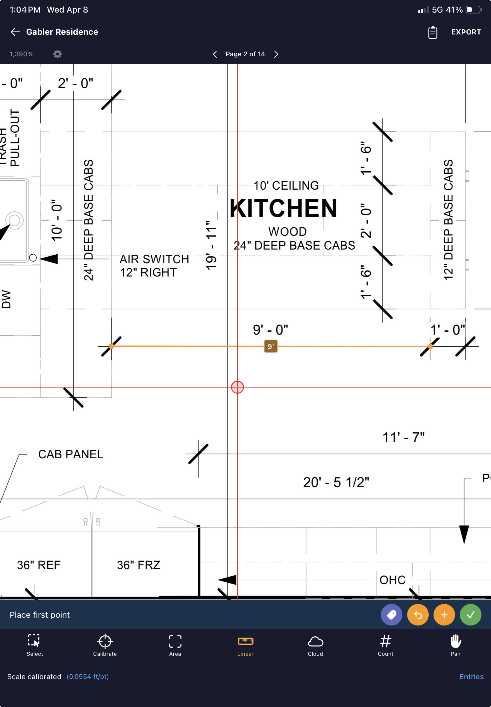
Placing points
- Select the Linear tool.
- Position the crosshair at the start of the run. Tap the + button.
- Move to the next point along the path. Tap +.
- Continue placing points for each bend or corner in the path.
- Tap the ✓ button to complete the measurement. The total length in feet is displayed.
Use cases
- Wall runs for baseboard or crown molding
- Pipe and conduit lengths
- Wiring runs
- Fence lines and curbing
10. Count tool
The count tool lets you count individual items on the plan by tapping each one. Each tap places a marker and increments the count.
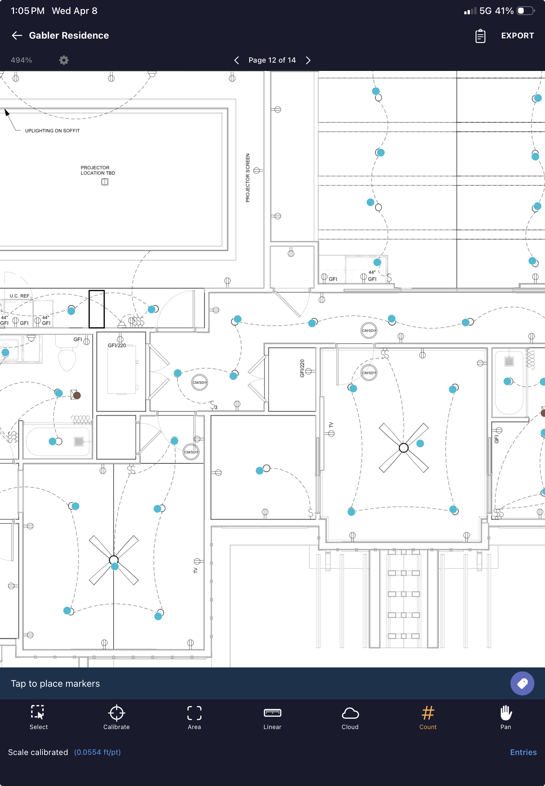
Counting items
- Select the Count tool.
- Tap directly on each item you want to count. A small colored marker appears at each tap location, and the count increments.
- Continue tapping until all items are counted.
Unlike the area and linear tools, count markers are placed immediately with each tap — there's no crosshair. This makes counting fast.
Use cases
- Outlets, switches, and light fixtures
- Plumbing fixtures
- Doors and windows
- Structural columns
- HVAC registers
11. Cloud / revision tool
The cloud tool draws a revision cloud rectangle with annotation text inside. Clouds are used to mark areas that need attention or have changed between revisions.
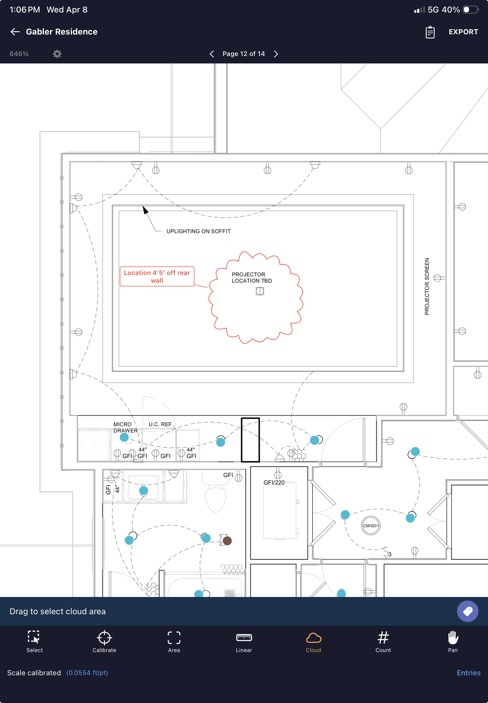
Drawing a cloud
- Select the Cloud tool.
- Drag on the plan to define the cloud rectangle. Drag from one corner to the opposite corner.
- When you release, a text input sheet appears. Type the annotation text (e.g., "REVISED PER RFI #12", "HOLD FOR OWNER DECISION").
- Tap Save. The cloud appears with the scalloped cloud border and your text centered inside.
Moving cloud text
After placing a cloud, you can drag the text label to reposition it within or outside the cloud boundary. You can also drag the resize handles to adjust the text box size.
12. Select tool
The select tool lets you tap on existing takeoff measurements to select them for editing or deletion.
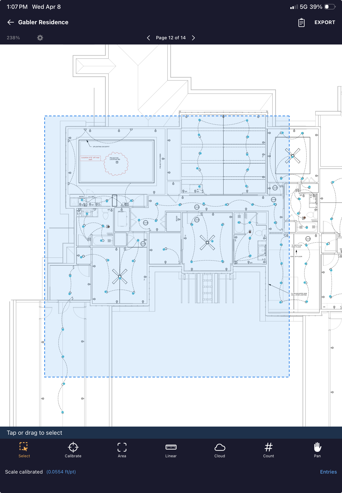
Selecting items
- Select the Select tool.
- Tap on any area polygon, linear path, count marker, or cloud to select it. Selected items are highlighted.
- Tap additional items to add them to the selection (multi-select).
Editing selected items
With items selected, the action bar shows these buttons:
- Delete (red trash icon) — permanently removes all selected measurements.
- A- / A+ (font size buttons) — decrease or increase the label font size on selected items.
- Label (tag icon) — opens the label sheet to assign or change the label, trade, and color for all selected items at once.
The status bar shows how many items are selected (e.g., "3 selected"). Tap empty space on the plan to deselect all.
13. Labels, trades, and colors
Every takeoff measurement belongs to a label and a trade (also called vendor). Labels help you organize your measurements into logical groups.
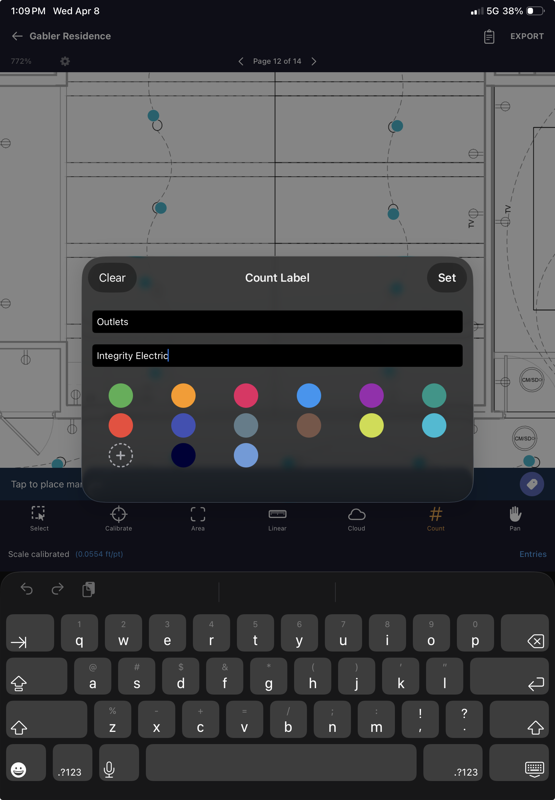
Setting a label
Before placing measurements, tap the Label button in the action bar to set the active label and trade. All subsequent measurements will be assigned to this label.
- Label — the specific item name, e.g., "Kitchen Tile", "Gym Rubber Floor", "Can Lights".
- Trade — the vendor or trade responsible, e.g., "Collins Tile", "Division 9", "Atlas Electric".
Colors
Each tool has a default color (green for Area, orange for Linear, red for Cloud, pink for Count), but you can change it. The color is set through the label sheet or through the color picker (accessible from the gear icon in the page navigation bar). The color picker shows a 4×3 grid of 12 preset colors.
Custom colors
Below the preset grid, a Custom Color picker uses the system color selector to let you create any color. Tap "Reset to Default" to restore the tool's original color. Long-press any custom color swatch to enter delete mode.
Per-tool labels
Each tool (Area, Linear, Count, Cloud) maintains its own active label and color independently. This means you can switch between tools without losing your label settings.
14. Entries panel
Tap the Entries button in the bottom status bar (next to the calibration status) to open the entries panel. This shows a grouped summary of all takeoff measurements across all pages.
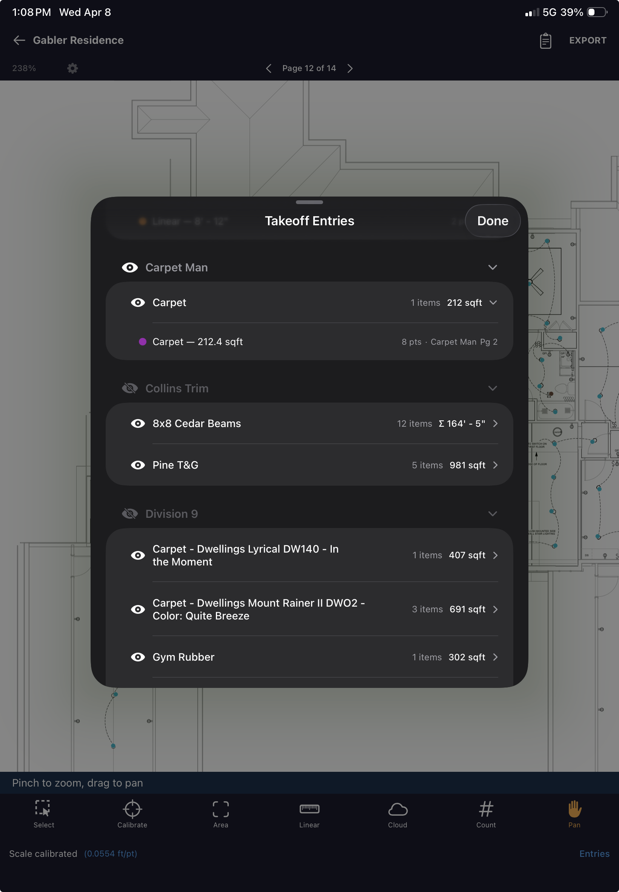
Organization
Entries are organized in a tree structure:
- Top level: Trade / vendor name (e.g., "Collins Tile")
- Second level: Label name with measurement type and subtotal (e.g., "Kitchen Tile — 342 sqft")
- Individual entries: Each measurement with its page number and value
Tap a trade header to collapse or expand its entries.
Navigating to entries
Long-press any individual entry to jump to its location on the plan. The viewer scrolls to center the measurement and switches to the correct page if needed.
Hiding groups
Tap the eye icon next to a trade or label to hide its measurements from the plan view. This is useful when overlapping measurements make the plan hard to read. Hidden groups are still included in exports unless you deselect them.
15. Takeoff settings
Tap the gear icon in the page navigation bar (visible only in takeoff mode) to open takeoff display settings.
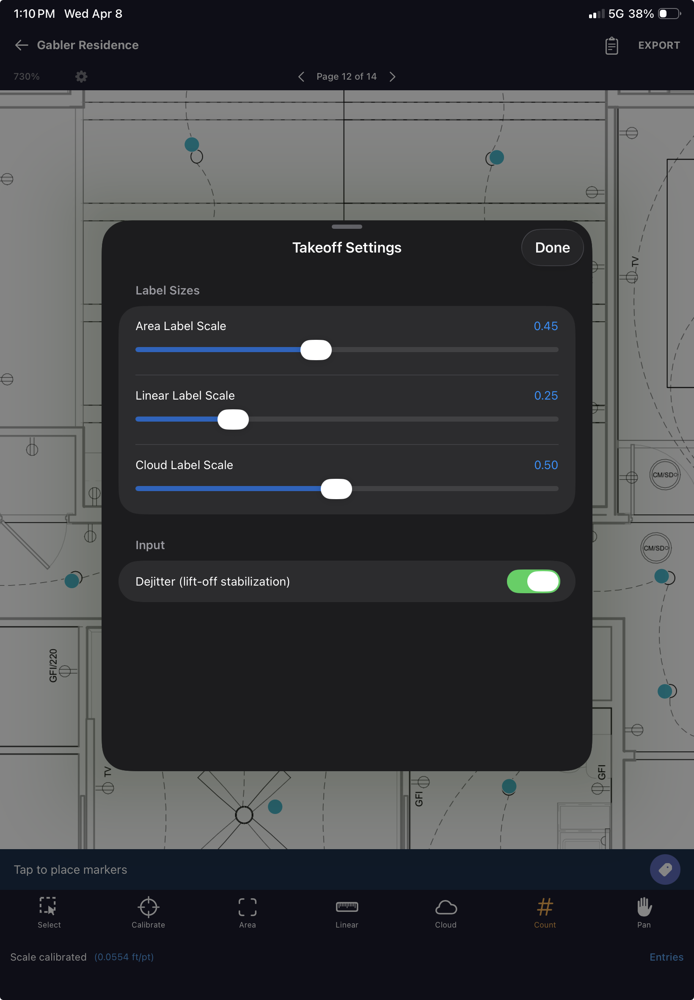
Label sizes
| Setting | What it controls |
|---|---|
| Area Label Scale | Size of the square footage labels inside area polygons |
| Linear Label Scale | Size of the length labels along linear measurements |
| Cloud Label Scale | Size of the text inside revision clouds |
Each setting has a slider ranging from 0.05 to 1.0. Smaller values make labels smaller, which is useful on dense plans where labels overlap.
Dejitter
The Dejitter (lift-off stabilization) toggle reduces accidental point drift when you lift your finger from the screen. Enabled by default. Disable it if you prefer raw touch input.
16. Punch list export
Tap EXPORT in the top-right corner while in punch list mode to open the export configuration screen.
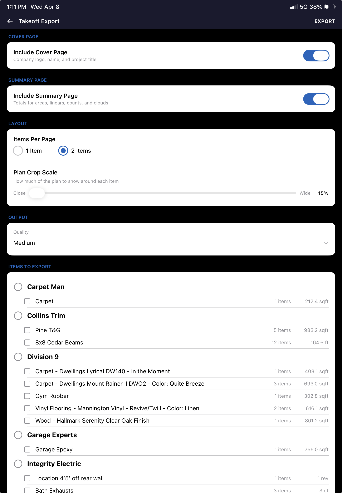
Cover page
Toggle Include Cover Page to add a branded first page with your company logo, company name, project name, and date. Set your logo and company name in Settings before your first export.
Layout options
| Setting | Description |
|---|---|
| Plan View Only | Export only the plan overview with markers — no individual detail pages for each item. Good for a quick summary. |
| Items Per Page | Choose 1 or 2 items per page. 1 item per page gives more space for the plan crop and photo. |
| Plan Crop Scale | Slider (15%–100%) controlling how much of the plan is shown around each marker. 15% = tight close-up. 100% = full page view. A live preview updates as you drag. |
| Marker Size | Slider (4–16pt) controlling the size of numbered markers on the plan overview pages. |
Output quality
Choose Low, Medium, or High compression. Low compression produces smaller files. High compression produces larger, sharper files. Medium is recommended for most uses.
Trade filter
By default, all trades are included. Use the trade dropdown to export only items for a specific trade. This lets you generate separate reports per subcontractor — e.g., one PDF for the plumber, one for the electrician.
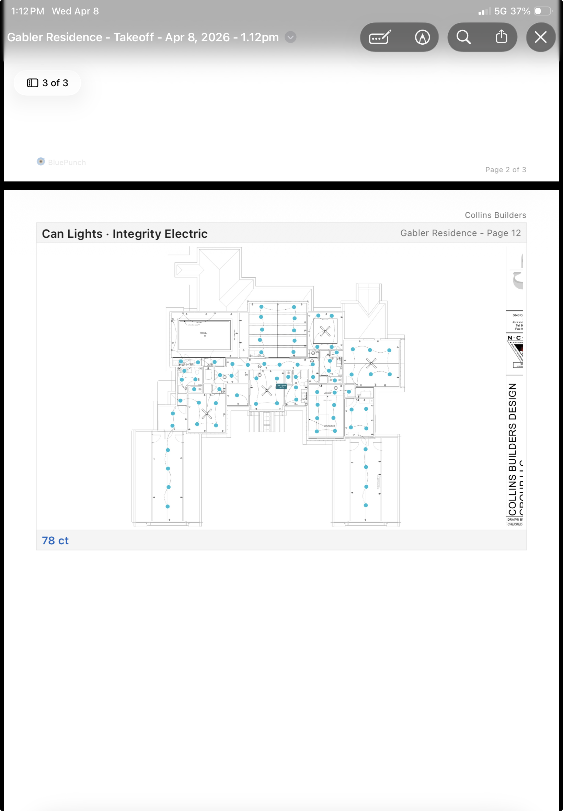
Sharing
Tap EXPORT to generate the PDF. A progress bar shows export status. When complete, the system share sheet opens so you can email, AirDrop, save to Files, or share via any installed app.
17. App settings
Tap the gear icon on the project list screen to open app settings.
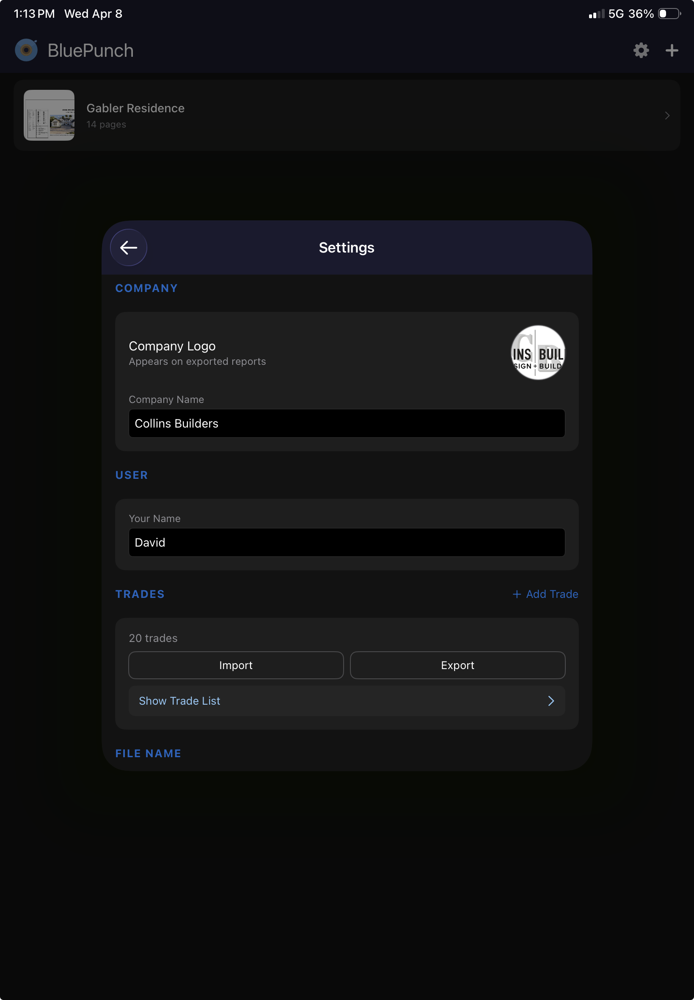
Company
| Field | Description |
|---|---|
| Company Logo | Tap to select from photo library or import from Files. Appears on the cover page and header of every exported PDF page. |
| Company Name | Your company name as it should appear on reports. |
User
| Field | Description |
|---|---|
| Your Name | "Prepared by" name on the cover page of exported reports. |
Trades
Manage your list of trades (subcontractor categories). These appear as autocomplete suggestions in the punch item detail sheet.
- Add Trade — tap the + button to add a new trade name.
- Delete — tap the X next to a trade to remove it.
- Import — import a trades list from a text file (one trade per line).
- Export — export your current trades list as a text file to share with your team.
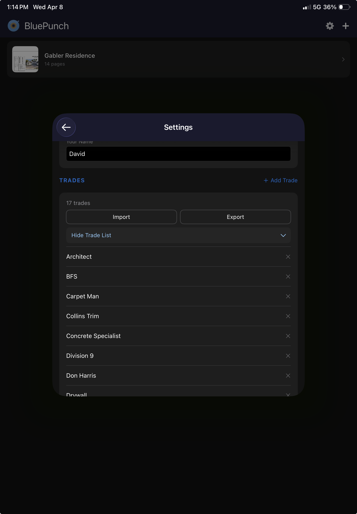
Tip: Set up your trades list once and export it. Then import it on every team member's device so everyone uses the same trade names. This keeps your reports consistent.
18. File name customization
At the bottom of Settings, you can configure how exported PDF files are named.
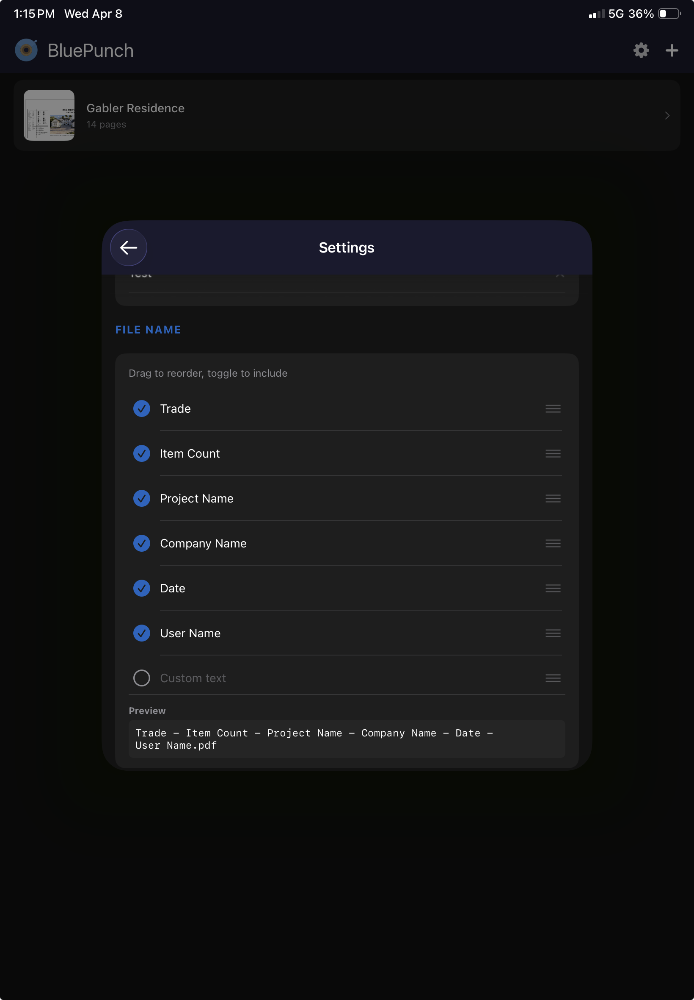
Available fields
The filename is built from seven fields that you can reorder, enable, or disable. All are enabled by default except Custom:
- Project Name — the project title
- Company Name — your company name from settings
- Item Count — total number of items (e.g., "(12) Items")
- Trade — the trade filter used for the export
- Date — the export date and time
- User Name — your name from settings
- Custom — any custom text you type in (disabled by default)
Reordering
Drag the handle on the right side of each field to change the order. The filename preview at the bottom updates in real-time.
Toggling
Tap the circle checkbox next to each field to include or exclude it from the filename.
Reset
Tap Reset to Default to restore the original filename format.
19. Tips and shortcuts
- Pinch to zoom — two-finger pinch on the plan viewer for deep zoom on high-resolution PDFs.
- Double-tap to zoom — quickly zoom into a specific area.
- Pan tool — in takeoff mode, switch to the Pan tool to scroll around without accidentally placing points.
- Rectangle mode — for quick rectangular areas, toggle rectangle mode so you only need two corner taps instead of four.
- Export by trade — generate separate punch list reports per trade so each sub only sees their own items.
- Per-page calibration — each page in a multi-page plan set can have its own scale. Calibrate each page independently for mixed-scale drawings.
- Dejitter — if you find that points are slightly off from where you tapped, make sure dejitter is enabled in takeoff settings.
- Long-press entries — long-press any entry in the takeoff entries panel to jump directly to that measurement on the plan.
- Hide overlapping groups — use the eye icon in the entries panel to temporarily hide groups from the plan view when things get cluttered.
- Custom colors — use the RGB sliders at the bottom of the color picker to create custom colors for your labels. Helps keep different material types visually distinct.
- Backup your work — all data is stored locally on your device. Make sure your device backups are enabled (iCloud Backup or equivalent).
- Multi-page plan sets — all measurements and punch items are stored per-page. Navigate with the left/right arrows in the page bar.
- Company logo — set your company logo in Settings before your first export. It appears on the cover page and header of every PDF page.
- Filename customization — configure your export filename format once in Settings. It applies to all future exports.
Need help? Contact us at dt-construction@port87.com.